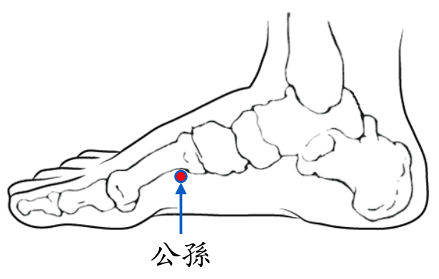

【穴位名稱】: 公孫 (SP4)

【治療症狀】: 心浮氣躁 肚子痛 胃痙攣 膈肌痙攣(打嗝) 胃灼熱 胃病胃痛 胃酸過多 消化不良 飲食過度 腹瀉 噁心想吐 嘔吐 食道狹窄 胃、十二指腸潰瘍 急性腸胃炎 腸功能紊亂 結核性腸炎(拉肚子) 月經過多 經痛 乳房疼痛 失眠 神經衰弱 重癥肌無力 肋膜炎 肋痛 頭痛 前頭痛 上眼瞼無力 近視 肥胖 瘦不下來
【取穴位置】: 足內側緣，第1蹠骨基底前下方凹陷處，當太白後1吋，{79}展肌中。《靈樞·經脈》：「去本節之後一寸」；《醫學入門》；「太白後一寸陷中」；《循經考穴編》：「赤白肉際。」
【針刺方法】: 直刺0.5～1吋。